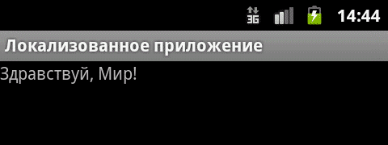
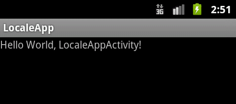
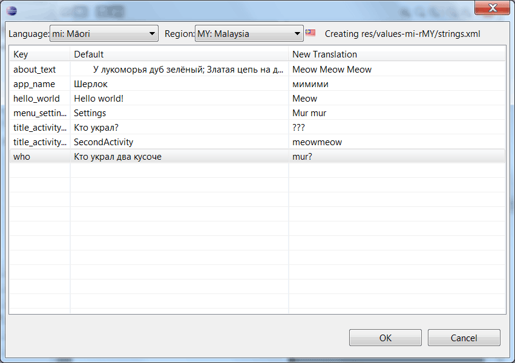

/* Моя кошка замечательно разбирается в программировании. Стоит мне объяснить проблему ей - и все становится ясно. */
John Robbins, Debugging Applications, Microsoft Press, 2000

/* Моя кошка замечательно разбирается в программировании. Стоит мне объяснить проблему ей - и все становится ясно. */
John Robbins, Debugging Applications, Microsoft Press, 2000
В статье, посвященной ресурсам, мы уже затрагивали эту тему с теоретической точки зрения. Разберем теперь практическую часть. Мы уже умеем пользоваться строковыми ресурсами и меняли строчки, например, Hello, World на Здравствуй, Мир! Но на самом деле это не совсем правильный подход. Для профессионально написанного приложения лучше использовать другой подход. А именно, локализацию.
Что это значит? Мы не будем менять строчку Hello, World, которая будет считаться строкой по умолчанию, а создадим новый локализованный ресурс. Это даст нам дополнительное преимущество, если пользователь запустит приложение на телефоне с английской локалью, то он увидит текст на знакомом ему языке. Если приложение запустит русский пользователь, то он увидит текст на русском языке. Согласитесь - очень удобно.
Напишем приложение, которое будет поддерживать английскую и русскую локализации. Дефолтной будет английская локализация. В этом случае, если на телефоне не будет найден нужный локализованный ресурс, то будет использоваться английский вариант.
Чтобы не усложнять материал, воспользуемся стандартным приложением, который мы изучали в самом начале. Создадим новый проект LocaleApp, но на этот раз мы не будем трогать файл strings.xml в каталоге res/values, а создадим новый подкаталог values-ru в том же каталоге res. Скопируем в него файл strings.xml из каталога values и изменим его содержание.
<?xml version="1.0" encoding="utf-8"?>
<resources>
<string name="hello">Здравствуй, Мир!</string>
<string name="app_name">Локализованное приложение</string>
</resources>
Запустим приложение и увидим, что текст выводится на русском, так как у меня на эмуляторе выбраны русские настройки.

Как перейти на американскую локаль? Идём в Настройки→Язык и клавиатура→Выбрать язык. Выбираем английский язык English (United States). Снова запускаем приложение в эмуляторе или на телефоне. Теперь наше приложение будет выглядеть так:

Ресурсы из каталога res/values считаются ресурсами по умолчанию. Они отображаются в том случае, когда система не найдет ресурсы для текущей локали устройства. В нашем случае, при выборе любого языка, кроме русского будет использоваться res/values. Если мы захотим разделить англичан и американцев, тогда придется создавать два каталога: res/values-en-rUK и res/values-en-rUS. Обратите внимание, что перед кодом второй части ставится буква 'r'. Иными словами, мы определяем не только язык, но и регион.
Проведем несколько экспериментов. Удалим из файла res/values-ru/strings.xml строковый ресурс hello с текстом Здравствуй, Мир!. Сохраним изменения и запустим проект на устройстве с русским языком. Платформа заменила отсутствующий в локализации ресурс дефолтным английским.
Продолжим опыты и поступим наоборот - удалим теперь ресурс из файла res/values/strings.xml. На устройстве выберем какой-нибудь другой язык, например, итальянский. В этом случае вы увидите что-то непонятное, скорее всего вы получите сообщение об ошибке.
Отсюда можно сделать вывод, что вам необходимо следить за ресурсами по умолчанию. Старайтесь проконтролировать, чтобы ваше приложение всегда содержало все необходимые ресурсы по умолчанию, а уже потом можете начинать локализацию приложения. Для этого вам достаточно будет скопировать файл в новый подкаталог и отредактировать его.
На самом деле локализовать можно не только строковые ресурсы. В разных странах принято рисовать какой-нибудь объект в соответствии со своими традициями, например, изображение почтового ящика. В этом случае вы можете создать каталог /res/drawable-de, в котором будут находиться изображения, предназначенные для немцев.
Кстати, выбор нужных языков может повлиять на ваши продажи платных программ. Google проводит различия между странами, в которых можно распространять платные и бесплатные программы. Имейте это в виду.
В коде вы обращаетесь к нужным ресурсам следующим образом:
String hello = getResources().getString(R.string.hello_world);
// или так
TextView textView = new TextView(this);
textView.setText(R.string.hello_world);
Система сама подставит нужную строку. Явно указать, что хочется использовать ресурс на конкретном языке, у вас не получится.
Чтобы увидеть, как меняется текст в различных локализованных версиях вашего приложения, необязательно запускать приложение в эмуляторе. Можно в Eclipse на панели инструментов под меню щелкнуть на значке глобуса и выбрать из выпадающего списка нужный вам пункт (он появится после того, как вы создадите необходимые локализованные ресурсы), и все локализованные строчки сразу поменяются на экране активности.
Также можно сразу создать локализованный файл через удобный мастер. Там же в меню есть пункт Add New Translation..., который выводит диалоговое окно со списком уже имеющихся строковых ресурсов из вашей программы. Вам нужно выбрать язык и регион для перевода, а затем заполнить в таблице колонку New Translation. Я выбрал язык mi (Maori) и регион MY: Malaysia, что получить что-то похожее на кошачий язык, так как официального кошачьего языка ещё нет в этом списке (пичалька).

После того, как вы завершите перевод всех ресурсов, нажимаете на кнопку OK и у вас появится готовая папка с новым файлом strings.xml для выбранной локализации.
Ничего сложного.
магазин запчастей тоета ; рестораны с фуршетным меню, 1 шт .; консультация врача ортопеда ; Чем смыть силиконовый герметик с акриловой ванны .; дизайн ванной комнаты с душем ; душевая кабина с чугунным поддоном ; Кормящая мама, что делать с уплотнение в подмышечной впадине .; зимние пальто женские 2013 2014 фото